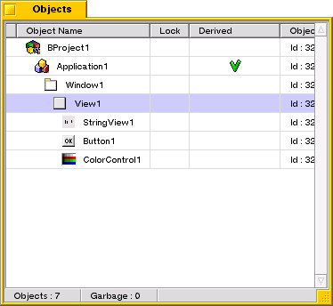

So arbeiten Sie mit MeTOS...
Nachdem MeTOS gestartet ist, werden Ihnen 6 Fenster angezeigt:
- das MeTOS Fenster
- das AddOns Fenster
- das Objects Fenster
- das Properties Fenster
- das Tools Fenster
- das Undo Fenster
Über das MeTOS Fenster wird Ihnen das Menü bereitgestellt, außerdem wird dieses Fenster
dazu verwendet, Fehlermeldungen und Informationen der laufenden Tätigkeiten anzuzeigen.

Das Addons Fenster zeigt die Objekterweiterungen an, die Sie bei der Erstellung von GUI Be
Objekte verwenden können. Hier finden Sie BApplication, BWindow und mehr.

Um ein Objekt zu erstellen, verwenden Sie einfach Drag and Drop (Nehmen und Ablegen) um ein
AddOn in das Objekt Fenster zu setzen. Oder Sie verwenden einen Rechtsklick auf das AddOn
um das Pop-Up Menü anzuzeigen und verwenden "new" mit dem Namen des AddOns.

Das Objects Fenster zeigt das derzeitige Projekt mit allen dazugehörigen Objekten an.

In deisem Fenster können Sie einige Informationen sehen:
- das Icon und der Name des Objektes
- die lock Status des Objektes (lock wird verwendet, um ein Objekt vor dem löschen zu schützen.)
- das derived value (derived sagt, dass der Code Generator eine Header und eine C++ Datei erstellt hat)
- die ID des Objekts
- Die Anzahl der erstellten Objekte
- Die Anzahl der Objekte, die sich in der garbage list (gelöschte Objekte) befinden.
Sie können die derzeitig ausgewählten Objekte in der Liste sehen.
Sie können ein Objekt einfach anwählen, indem Sie dieses mit der Mouse in der Liste anklicken.
In deisem Fenster können Sie Zugriff auf einem Objekt Pop-Up Menü bekommen (über das Objekt können
Sie Zugriff auf das Pop-Up erhalten).
Um dieses Menü anzuzeigen, führen Sie einfach ein Rechtsklick auf das Objekt aus.

Über das Propeties Fenster können Sie die Objekt Eingenschaften einstellen oder verändern.

Diese Einstellungen sind möglich:
- alle Eigenschaften die Sie sehen oder verändern können (einige interne Eigenschaften sind versteckt)
- Auswahl von Funktionen, die Sie in ihr C++ Code einbauen möchten.
- Zusätzlicher Code, den Sie einfügen möchten füür ein Objekt (Eingefügt in den erstellten C++ Code)
- Abhängigkeit des Objektes zu Bibliotheken (libraries) oder anderen Dateien.
- Informationen über das Objekt
Um die Eingenschaften zu verändern, klicken Sie auf das Objekt und veränderren Sie die Einträge bei Value.
Das Tools Fenster läßt sie einige Werkzeuge (Tools) verwenden:
- Ausrichten einiger Objekte mit oser
- Löschen (delete) von Objekten
- Vergebe gleiche Eingenschaften für ausgewählte Objekte
- Farbmarkierung eines Objektes mit dem color Werkzeug (für View)
- Zurückstellen der gewählten Objektgröße zur alten Größe
Mit einem rechtsklick auf das Werkzeug, bekommen Sie zugriff auf spezielle Effekte.
Sie können auch über das Objektmenü auf die Werkezuge zugreifen.

Über das Undos Fenster kann dazu verwendet werden, vorherige Einstellungen und Veränderungen
rückgängig zu machen (delete, propertie Änderungen und mehr...)
Um Undo zu nutzen, wähle Sie eine Datei und benutzen die Restore option (Zurückstell Option) des
Pop-Up Menüs, das bei einem Rechtsklick auf die Datei angezeigt wird.

Anfang
- CKJ - Vincent Cedric
Copyright (c) 2000-2004.
translation by Lelldorin 2004